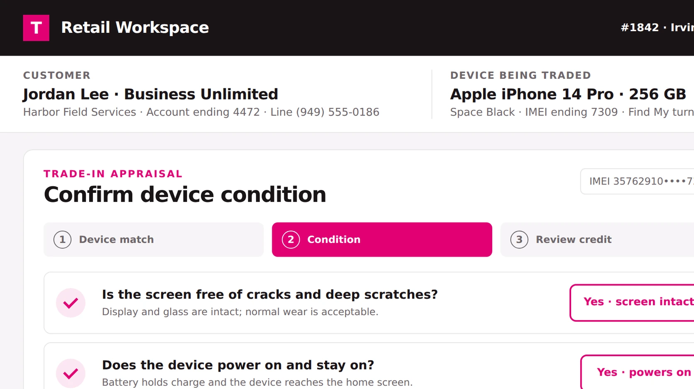
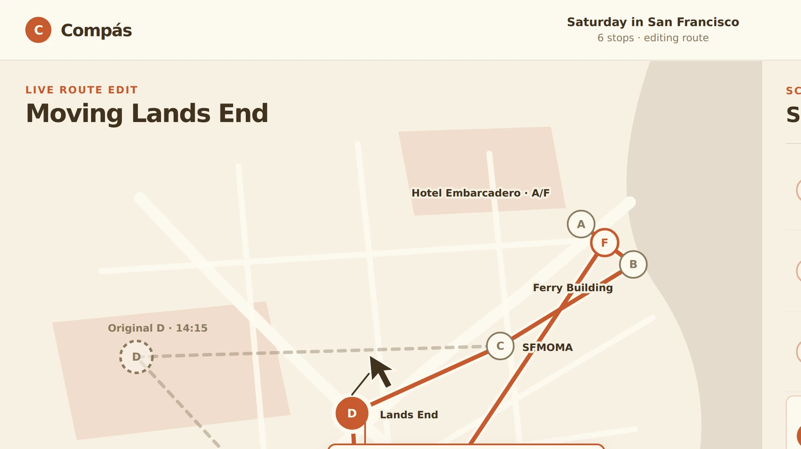
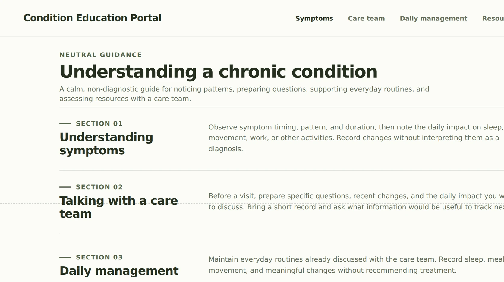
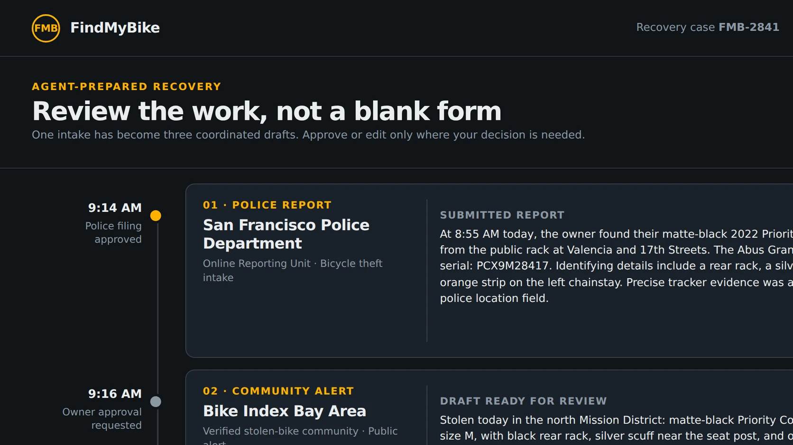
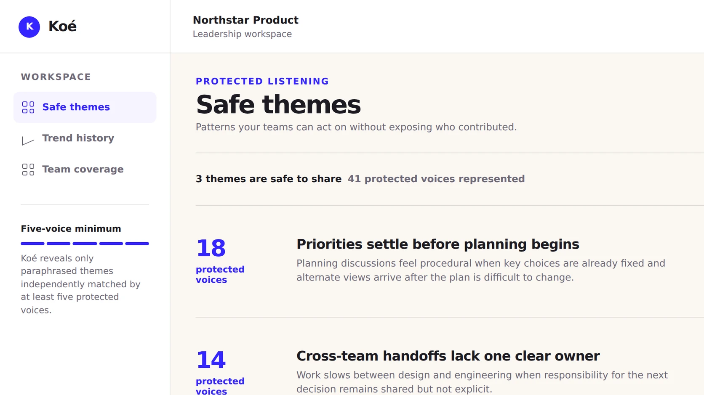

All work
Seven case *studies.
Domain
Seven case studies.

 T-Mobile API Marketplace
T-Mobile API MarketplaceSome of these customers were never human. I designed for them too.
Problem Every new customer need got its own bespoke flow. That stops scaling fast, because the next need is always a little different.
Decision Let AI interpret the order, then show that interpretation back in the UI before anything commits. Employee data goes in anonymized. Legal had objections, so we ran a pilot and the objections went away.
Outcome Built it and demo-validated it. Enterprise orders projected 2–4 hrs → 10–20 min.
Read the case study →
Case study — T-Mobile for Business02

Four systems, one trade-in flow. I argued against the modals and lost.
Problem Trade-in was the most broken piece of TFB e-commerce. Four different surfaces all needed it.
Decision One shared flow instead of four forks. Bulk upload by spreadsheet, because that is how the big accounts actually work. And I fought for in-page micro-flows over modals.
Outcome Shipped in 2 months across all surfaces. ~10% order-completion lift per client.
Read the case study →
Case study — Western Union03

Finding money in a city you just landed in
Problem People with an urgent money problem were scanning map pins. The hours and the payout limits were hiding in the detail pages.
Outcome Eligibility first, then the map. Shipped responsive across a global network.
Read →
In progress — Compas05

Move one thing and the whole plan moves. Compas shows you that cost first.
Bet The map and the schedule are one surface, not two. Drag either one and the other reacts, so the zigzag shows what it costs before you commit.
For Travelers and tour operators. Event planners. Anyone whose plan lives on a map and a clock at the same time.
Status Discovery. 5 conversations in, documented live, no certainty added after the fact.
Follow the work →
Case study — Healthcare · NDA04

Shipped under full NDA. The client stayed two more years.
Decision Above the fold is a myth, so I brought research the client could reuse in their own internal fights.
Outcome Traffic held through a full rebuild. 2-year extension.
Read →
Rebuilt 2015 → 2026 — FindMyBike07

The old app put a dot on a map. That answers the wrong question.
Problem The 2015 app put a dot on a map. That dot answers the wrong question, because it invites an owner to go confront a thief.
Decision An agent runs the playbook. Police report, verified sightings, insurance claim. The owner approves every step, and the precise location routes to police, never to the owner.
Artifact A working simulated prototype. Report the theft, run the recovery.
Run the recovery →
Rebuilt 2015 → 2026 — Koé06

Five voices in, one protected theme out
Problem AI can synthesize candor and it can destroy anonymity. Both are true, so a 2015 trust product had to be rebuilt for both.
Decision Five voices before anything is visible. Paraphrase, never quote. And the submitter confirms what the machine understood before it goes anywhere.
Artifact A working simulated prototype, right here on the page. Try both chairs.
Try the prototype →
Nothing matches that combination.